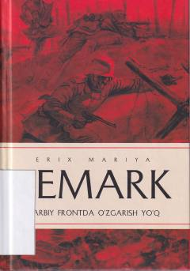

GFBirinchi jahon urushining dahshatlari va yosh avlod taqdiridan hikoya qiluvchi mashhur roman.
Mazkur asarda Birinchi jahon urushi girdobiga tortilgan yoshlarning taqdiri, urush dahshatlari va uning inson ruhiyatiga ko'rsatgan og'ir ta'siri ta'sirchan realistik ruhda aks ettirilgan. Roman urushning asl basharasini fosh etib, uning ma'nosizligini ochib beradi.